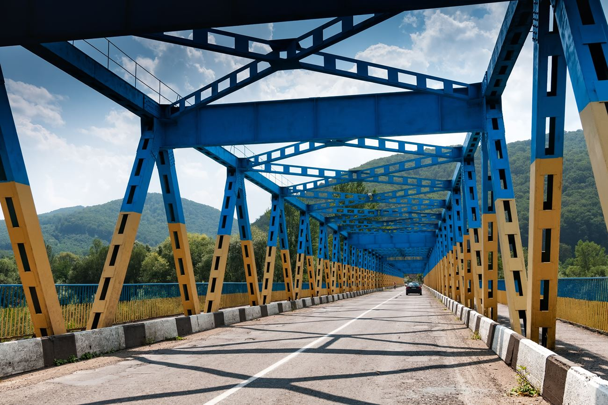

Tłumacz przysięgły języka ukraińskiego
Dotychczas, analitycy ruchów migracyjnych wyróżniają cztery wielkie emigracje Ukraińców. Były one związane z dużym ubóstwem pod koniec XIX wieku, powodowaną skrajną polityką eksploatacyjną państw zaborczych, I Wojną Świątową i jej następstwami, II Wojną Światową, kryzysem ekonomicznym i masowymi przesiedleniami ludności, kryzysem gospodarczym po rozpadzie Związku radzieckiego, który również skutkował bardzo ciężką sytuacją gospodarczą na terenach dzisiejszej Ukrainy.
Od kilku lat, a właściwie podczas ostatniej dekady, zaobserwować możemy ponowny trend migracyjny Ukraińców. W 2012 roku były to głównie Rosja, Polska, Włochy i Czechy.Do wiosny 2014 roku trend migracji zarobkowej Ukraińców nieznacznie, ale stabilnie zmniejszał się. Sytuacja zmieniła się diametralnie do roku 2014, związane z konfliktem militarnym na terenach Półwyspu krymskiego i tzw. Donbasu, gdzie mieszkała bardzo duża liczba ludności tamtejszej Ukrainy. Według danych statystycznych, przed konfliktem Krym zamieszkiwało 2,3 mln ludności, natomiast Donbas ok. 7 mln.
Następstwem tych wydarzeń była oczywiście migracja z terenów zajętych konfliktem zbrojnym wewnątrz Ukrainy, ale również do Rosji i krajów Unii Europejskiej, takich jak Polska. Strata Donbasu, wiąże się z stratą jakże cennego sektoru przemysłowego (metalurgia, górnictwo) i zmiana gospodarki na profil nastawiony na rolnictwo. Kolejnym ekonomicznym skutkiem konfliktu było zerwanie bardzo ścisłych stosunków gospodarczych z sąsiednią Rosją. Wszystkie te fakty poskutkowały spadkiem PKB Ukrainy o 16% (bezpośrednio po tragicznych wydarzeniach na Majdanie). Średnia płaca Ukraińca w październiku 2016 roku wynosiła w przeliczeniu na zachodnią walutę 130 dolarów.
11 czerwca 2017 roku nastapiło zniesienie ruchu wizowego dla Ukraińców na tereny polskie. Mimo wielu obaw polityków i zewnętrznych obserwatorów, fakt ten nie wpłynął znacząco na ruchy migracyjne. Ruch graniczny pozostał na stałym poziomie wynoszącym średnio ok. 200 tysięcy obywateli Ukrainy tyogdniowo przekraczających Polską granicę.
Faktem jest, że ilość Ukraińców przebywających na terenie Polski stale rośnie. Polska jest krajem w którym uczy się największa ilość ukraińskich studentów. Urząd do Spraw Cudzoziemców, jako główne przyczyny takiego stanu rzeczy podaje:
W raporcie przygotowanym przez polski Urząd do Spraw Cudzoziemców, możemy doszukać się charakterystyki ukraińskich cudzoziemców.
Większość Ukraińców to Chrześcijanie - Katolicy, Prawosławni, Protestanci. Znalazła się również niewielka grupa Muzułmanów - 3% - to przede wszystkim ludzie pochodzenia tatarskiego. Społeczność tatarska już nie pierwszy raz chce osiedlić się na polskich ziemiach. Wsie tatarskie można spotkać od bardzo wielu lat na wschodzie Polski, na przykład wzdłuż granicy z Białorusią, lub na południowym wschodzie naszego kraju. Konkretnym przykładem może być wieś Kruyszynianyz przepięknym, drewnianym meczetem.
W przeprowadzonej analizie byli to ludzie w wieku 19 - 62 lat, z porównywalnym stosunkiem kobiet i mężczyzn. Wykształcenie wyższym mogło się pochwalić 31% badanych, reszta natomiast posiadała wykształcenie średnie.
Przyczynami ekonomicznymi tłumaczy się ok. 60% Ukraińców, których wzięto pod uwagę w badaniu statystycznym. Są to przeważnie osoby z obwodów kontrolowanych przez armię Ukraińską, na których nie ma działań militarnych, ale sytuacja gospodarcza jest ciężka.
Pozytywnie rozpatrzonych wniosków o legalizację pobytu czasowego obywateli Ukrainy na przełomie lat 2013 - 2018 najmniej zatwierdzono w 2013 roku, bo 9668 szt.Od tego czasu corocznie liczba zatwierdzonych wniosku stale rosła, by w 2017 roku osiągnąć poziom 70268 szt.
Decyzji o przyznanie pobytu stałego na terenie Polski wydano znacznie mniej. W 2013 roku było to 1679 szt, by liczba ta wzrosła maksymalnie do poziomu 7866 szt. Wydaje się, że jeżeli chodzi o rok 2018, trend ten utrzyma się, zarówno jeżeli chodzi o wydawanie decyzji o pobyt stały i czasowy.
Statystyki obejmują również statystyki przyznania decyzji na pobyt rezydenta długoterminowego UE, jednak są to liczby pomiędzy 400 a 800 osób w skali roku.
Większość pozytywnych decyzji wydawanych przez polską stronę, powodowana była przez fakt zatrudnienia na terenie Polski obywateli Ukrainy. W tym przypadku najczęściej wydaje się zgodę na pobyt czasowy.
Po więcej informacji odysłamy do źródeł zamieszczonych poniżej.
Źródło informacji: